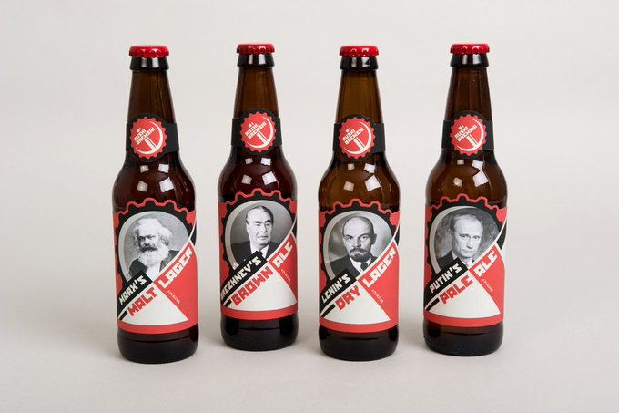

The Economic Times: "World Bank lends $1.5 billion push to power green hydrogen market.. New Delhi: The World Bank Friday approved a 1.5 billion loan to help India accelerate low-carbon energy development by promoting a market for green hydrogen as well as electrolysers and renewable energy penetration"

Racer: "After four seasons of Extreme E, Extreme H will arrive next year... 'There’s never been more need to look into new ways of using alternative energies than now,' [CEO Agag says]. '.. we’re going to focus on cars and the use of hydrogen for cars; it’s a championship that is going to be focused on hydrogen in general.'..
Agag has spoken before about Extreme H’s ambition to attract energy companies and tech companies.. manufacturers are once again taking note, especially as consumer doubts around conventional EVs remain.
'We had a very, very productive meeting a few weeks ago where a very large number of car manufacturers showed up with great interest for the championship,' he says. 'I was surprised myself'"
But NL is at least part of the EU, we'll give them some brownie points
Tulip Mania was out of Holland wasn't it? The first widely recognized econ bubble of the past 500 yrs.
It looks like the rabid trader, plutocracy-based culture also survived in Netherlands. It's interesting, when we look at all the countries who are most disturbed by Russia (which descends from a security / militocratic culture) are the Anglo, and Netherlands.. In relation to its size and influence, the amt of aid NL supplies to Ukraine is massive. The issue might be cultural.
Turchin: "Gunpowder weapons underwent a rapid evolution during the fifteenth century.. Small principalities and city-states could no longer hide behind their walls, which were easily breached by cannons. Intense military competition between European states weeded out those that couldn’t raise large armies; produce muskets and artillery in quantity; and build expensive modern fortifications that could withstand cannon fire...
The Military Revolution also triggered a revolution in governance and finance because successful states had to learn how to efficiently extract and use wealth from their populations.. As a result, medieval militocracies gradually evolved into ruling classes that combined military and administrative functions...
[T]hanks to its protected position in the British Isles.. England dispense[d] with the standing army.. The squirearchy, which started as a military class, gradually lost its military character and became simply a class of landowners.. A large merchant class evolved.. the United Kingdom came to be ruled by an elite that combined economic and administrative functions... Although most plutocracies rapidly went extinct, some lingered longer than others... The Netherlands survived into the twenty-first century, in part thanks to its waterways and canals"
Christian Bruhn (Germany) - Komm' In Fahrt - Der Hansa Pils-Hit #music
Railway Gazette: "Siemens Mobility and its Smart Train Lease subsidiary have signed a co-operation agreement with Tyczka Hydrogen to offer fuel cell trains with a full hydrogen supply chain and appropriate support services.
The partnership announced on June 25 is intended to ‘pave the way for a successful transformation of railways towards hydrogen mobility’, the companies explained"
"Walmart Canada Becomes the First Major Retailer in Canada to Introduce a Hydrogen Fuel Cell Electric Semi-Truck"

Fox Business: "Tesla owner says he’s locked out after battery died, replacement costs $26K.. A Tesla owner in Canada.. is locked out of his 140,000 vehicle after the battery died, and that the electric automaker told him a replacement would cost 26,000.. Mario Zelaya posted a video on TikTok saying his 'piece of trash' Model S died and that the car is locked, preventing him from being able to get inside. The caption on the video reads: '26K for a new battery. Locked out of car. Recalls are needed'"
Ruski Brewski #music
Have a little Ruski Brewski

"@XLCChelt@mastodonapp.uk
Liberals will say 'hey, why don't you lefties stop the "far-right"?'
Because in what is called 'politics', 'left' parties are only allowed to 'win' if they'll continue all the current economic systems - capitalism and the wealthy with power and status at the top.
Otherwise the whole establishment's might will get unleashed to stop them, well before they can make the required real economic change, as that is what would end their whole scam taking [from] the rest of us"
#EricBerg
Electrolytes: regulate body's electrical functions. A lot of hidden ailments are tied to a lack of it: calcium, chloride, magnesium, potassium, sodium. There are water solubile tablets, easy to take. Note these elements are not all vitamins, but specific minerals for neural sys.
Dark Matter, good show. Its science is unsurprisingly bullshit (again, multiverse) but by now this is "established Holywood science", so everyone takes it for granted... But they built a good script on top.
Joan Westennerg: "6 months ago, I left the bullshit industrial complex.. I used to be good at spinning stories. Give me a half-baked startup idea, a semi-charismatic founder and a fistful of VC dollars, and I could write a story compelling enough it barely mattered whether there was an ounce of truth in it... [But] I would lie awake at 3 AM, staring at the ceiling. My life was slipping away, and I had nothing to show for it but a series of cynical half truths paid for by shit shovelling wannabe billionaires hell bent on leaving the world worse off than they found it. I knew I was a part of something poisonous. It had been years since I'd displayed a shred of journalistic integrity...
One morning, I sat down at my desk to craft yet another press release touting yet another 'game-changing' startup that had raised - yet another - $25 million. And I realized I couldn't remember the last time I'd written something I believed in. The words that used to flow felt like trying to squeeze ancient toothpaste from an empty tube. That was the day I cracked... Somewhere along the way, I'd allowed my writing—the thing that used to give me purpose—to be co-opted by the bullshit industrial complex...
I have zero faith in the idea that unfettered vulture capitalism and a blind pursuit of 'disruption' will lead us to a better world. I've seen how perverse incentives and boiler room pressure to deliver exponential growth can warp even the most idealistic founders' vision. I've watched brilliant minds get sucked into the vortex of funding rounds and vanity metrics, losing sight of why they started their companies in the first place"
"@GossiTheDog@cyberplace.social
Saw a Threads employee liking a Fediverse toot just now - from Threads back into my Mastodon server - looks like more integration is coming"
Could have helped blunt Trump criticism but now it all got drowned out by that debate stuff.
WION: "The number of migrant crossing along the southern border of the United States has dropped more than 40 per cent since June 4 when President Joe Biden announced suspension of new asylum claims"
#SAF #RSF #Frontline 04/15 - 07/02
Color red denotes RSF territory. Birdeye view suggests SAF is doing somewhat better compared to RSF.
Reference
Nations and Nationalism, Culture, Narratives
The Fundamentals of Industrial Ideologies
Rome, The First Wave, Religion
Browse
Also on Mastodon, Codeberg, Github Pages